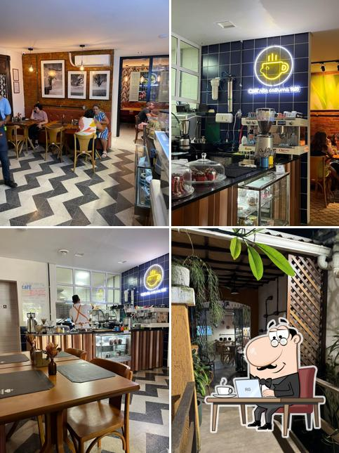
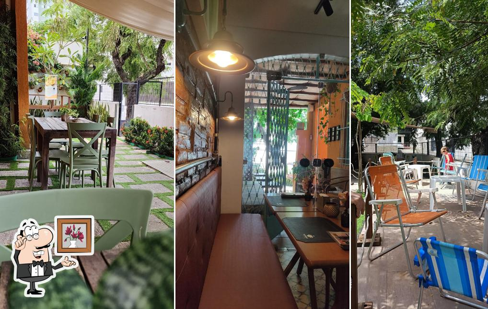
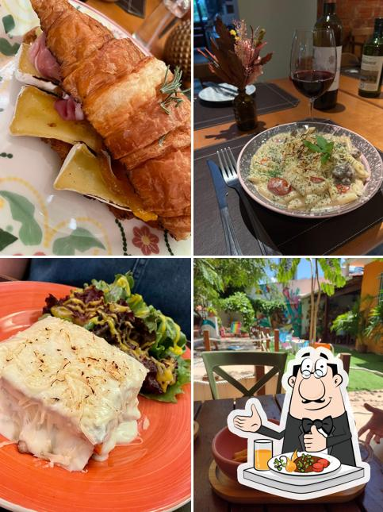

UM LUGAR PARA FICAR MAIS UM POUCO
Café, quintal
e furdunço bom.
Uma casa na Tamarineira para tomar um café, encontrar gente e deixar a conversa seguir sem pressa.
✳Boa comida, bom café,
quintal e biblioteca.
quintal e biblioteca.

01 — UM BOM COMEÇODESÇA PARA DESCOBRIR ↓R. GILDO NETO, 92
01UM CANTO NO BAIRRO
Tem lugar que
vira ponto de encontro.

UM POUCO DE SOMBRAUM POUCO DE TEMPO

CAFÉ + CONVERSANO TEMPO DA CASA
NÃO É SÓ CHEGAR E IR
Um café.
Uma ideia.
Uma tarde inteira.
Tem quintal para respirar, biblioteca para folhear e espaço para se reunir. A programação cultural muda — o Instagram é o melhor lugar para acompanhar os próximos encontros.
Acompanhar no Instagram02 / CASA ABERTAENCONTROS, OFICINAS E CULTURA
CONSULTE A PROGRAMAÇÃO ATUAL
CONSULTE A PROGRAMAÇÃO ATUAL
A CASA FICA AQUI
Bora chegar
sem pressa.
ENDEREÇO
Rua Gildo Neto, 92
Tamarineira · Recife, PE
HORÁRIOS DIVULGADOS NO MENU
- SegundaFechado
- Terça · quarta12h–21h
- Quinta12h–21h
- Sexta12h–22h
- Sábado · domingo9h–21h / 9h–20h
O resto é só escolher o dia.
Ver todos os caminhos